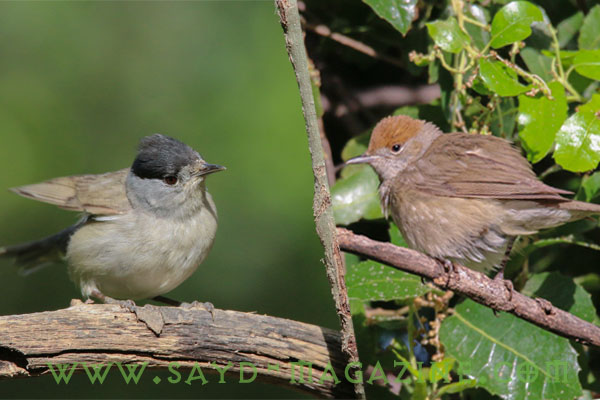

ابو قلنسوة أو ما يعرف محلياً بعصفور التين اسمه العلمي "Sylvia atricapilla" هو طائر مهاجر صغير الحجم من عائلة الدخليات ذكره يسمى الخوري وانثاه الشماس، يتميز بجسد رمادي باهت وبقلنسونة سوداء للذكر وحمراء للأنثى تساعد على التمييز بين الجنسين. تشكل الحشرات غذاء عصفور التين الأساسي، كما انه يتغذى على بعض الفواكه الموسمية كالتين والتوت لتخزين الدهون قبل هجرته الطويلة. ينتشر بشكل واسع في منطقة الشرق الأوسط وأوروبا وهو من الطيور المهاجرة التي تقصد البلاد الدافئة في الشتاء، و قد لاحظ العلماء تغير بعض خطوط هجرته في السنوات الأخيرة بسبب تغير المناخ بحيث أن بعض المجموعات خصوصاً في جنوبي أوروبا التي كانت مصنّفة كزائر صيفي فقط أصبحت اليوم تتحول تدريجياً إلى طائر مستوطن بسبب ارتفاع الحرارة العالمية. في لبنان يعتبر عصفور التين طائر مهاجر يكثر مروره في الربيع وفي الخريف، مفرخ صيفي شائع و مشتي غير شائع. على الرغم من تواجده على قائمة طعام بعض المطاعم و في ثلاجات التعاونيات التجارية في لبنان الا انه و غيره من طيور التيان ليسم مدرجين على قائمة طرائد الصيد في لبنان. و يبقى صيده السهل على "المكنة" أو على "الشبك" ممنوع قانونياً. و في مقابلة سابقة مع مجلة "صيد" استعرض البروفسور في علم الطيور البرية الدكتور غسان رمضان جرادي مطالعة علمية و قانونية تشرح اسباب عدم امكانية ضم التيان بشتى انواعه الى قائمة الطيور المسوح صيدها: " في لبنان 32 نوعاً من التيان، منها ما هو نادر ومنها ما هو متوفر، ولكنها جميعها تتغذى على الحشرات. فما هو الطير المسموح صيده من بينها. وهل يستطيع الصياد التمييز بين التيان أبو قلنسوة والتيان السرديني والتيان الإعتيادي والتيان أبيض الزور والتيان الأصغر أبيض الزور والتيان الرمادي الأسود الرأس؟ إن التيان في لبنان مفرخ ومقيم وفي شهر آب يكون لا يزال يطعم صغاره. ومن نوع التيان مجموعات مهاجرة تصل في أيلول. لذا فإن فتح الصيد في آب لصيد التيان سيؤدي إلى قتل الطيور المفرخة المقيمة. وقانون الصيد في مادته الرابعة، الفقرة ج.1 و ج.2 يقول: ” يقترح المجلس على وزير الوصاية إتخاذ قرارات بخصوص: – الأوقات التي يسمح فيها بصيد الطيور والحيوانات العابرة للحدود”. ولم يسمح القانون بصيد الطيور والحيوانات المقيمة (غير العابرة للحدود) وهذا يعني عدم قانونية فتح باب الصيد في آب أي قبل وصول الطيور المهاجرة. من ناحية ثانية، ونظراً لتشابه 32 نوعاً من التيان فإن التيان الذي يسمح بصيده سيعرض باقي الأنواع للخطر لأن الصياد لا يميز بعد بين التيان والتيان وما يشبه التيان. وأخيراً يبقى أن نقول أن صيد العصافير الصغيرة التي بحجم أصغر من السمن سيعرض 50% من طيور لبنان للإنقراض ومنها طبعاً ما هو مهدد بالإنقراض. فإختيار الطرائد في الصيد المسؤول يبنى على معايير هي أن يكون الطائر يغلب أكل الحبوب أو البذور، مكتنز اللحم، بحجم السمن وما فوق، غير مهدد عالمياً أو إقليمياً أو محلياً، وليس من أكلة الحشرات أو اللحوم، وليس مفيداً للزراعة والتوازن البيئي، ومتوفر بأعداد كبيرة. والجدير بذكره أن فصيلة أنواع التيان هي من أكلة الحشرات ولكنها تتغذى على الفاكهة في أواخر فصل التفريخ من أجل إكتساب الدهون التي تعطيها الطاقة لأيام الخريف أو خلال الهجرة عند القسم المهاجر منها. لا شك أن السماح بصيد التيان سيؤدي إلى إصطياد أنواع أخرى. فالقانون يقول: “فيما خلا الطرائد التي تحدد وفقاً للفقرة السابقة، تعتبر جميع الطيور والحيوانات البرية المقيمة والمهاجرة محمية على مدار السنة ويحظر صيدها”. وهذا يعني أن إقحام طائر التيان الذي يتغذى على الحشرات ومفيد للزراعة ومحمي بموجب المادة 4، الفقرة ب، هو أمر يصعب على المخولين تطبيق القانون والقيام بدورهم بل أنه أمر يجعل من التطبيق أمراً مستحيلاً، وذلك بسبب تشابه الأنواع، إذ يصعب حتى على مراقبي الطيور التمييز بين التيان الرمادي الزيتي وتيان الأحراج وبين تيان أبو قلنسوة وتيان أورفيوس." اعداد عبد الهادي صعب صور فؤاد عيتاني
من كل وادي خبر


{kind=link}